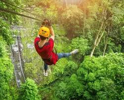
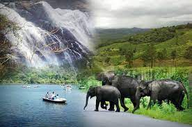
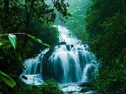

About us
Crowne tourism is a company based in KERALA. From past four years growing in travel industry we provide all types of travel services like Holiday Packages, pilgrims Packages, festival packages. The company provides suitable caravan for transport and accommodation also. We also have well experienced services for adventure activities like trekking, camping, river rafting etc. We believe in Atithi Devo Bhava and we are 24×7 at your service. Crowne tourism promises you to provide best of its services.



